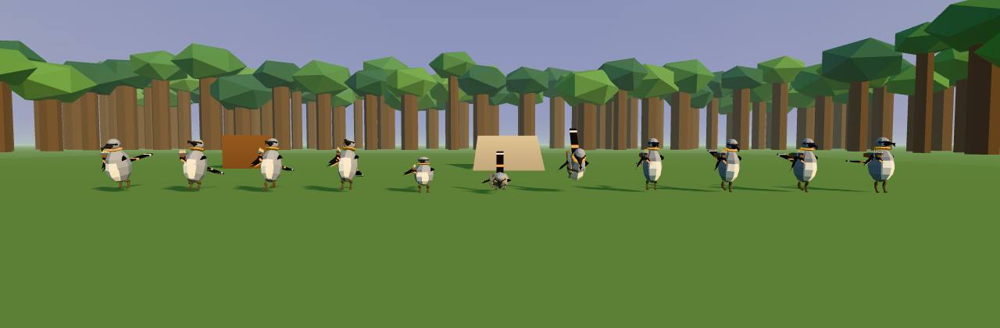

Movement
Movement is a skill in PERCH: the same bird that is slow to walk across a lane is fast on an Updraft and can leap over a wall. Every number below is read from the game.

Speed and stamina
Each bird has its own run speed, a sprint bonus that arrives after you leave combat, and a number of stamina pips. A pip pays for a dash or a jump from a dash, and slowly refills.
| Bird | Move speed | Sprint bonus | Stamina pips | Pip recharge |
|---|---|---|---|---|
| Shrike | 7 m/s | +2 m/s | 3 | 5 s |
| Albatross | 6.7 m/s | +2 m/s | 3 | 5 s |
| Kingfisher | 7.3 m/s | +2 m/s | 3 | 5 s |
| Lyrebird | 7 m/s | +2 m/s | 3 | 5 s |
| Hornbill | 6.9 m/s | +2 m/s | 3 | 5 s |
| Flamingo | 7 m/s | +2 m/s | 3 | 5 s |
| Penguin | 6.6 m/s | +2 m/s | 3 | 5 s |
| Puffin | 6.9 m/s | +2 m/s | 3 | 5 s |
| Peacock | 7 m/s | +2 m/s | 3 | 5 s |
| Vulture | 6.9 m/s | +2 m/s | 3 | 5 s |
| Swift | 7.6 m/s | +2 m/s | 4 | 5 s |
| Hummingbird | 7.4 m/s | +2 m/s | 4 | 5 s |
| Owl | 7 m/s | +2 m/s | 3 | 5 s |
| Pelican | 6.8 m/s | +2 m/s | 3 | 5 s |
| Secretarybird | 7.4 m/s | +2 m/s | 4 | 5 s |
| Starling | 7 m/s | +2 m/s | 3 | 5 s |
| Cassowary | 7 m/s | +2 m/s | 3 | 5 s |
| Toucan | 7 m/s | +2 m/s | 3 | 5 s |
| Woodpecker | 6.9 m/s | +2 m/s | 3 | 5 s |
| Nightjar | 7.2 m/s | +2 m/s | 3 | 5 s |
Running, sprinting and crouching
| Rule | Value |
|---|---|
| Acceleration | 50 m/s² |
| Deceleration with no input | 40 m/s² |
| Crouch-walk speed | 3.5 m/s |
| Sprint starts after leaving combat for | 5 s |
| Sprint ramps in over | 0.5 s |
| Step-up height (stairs and kerbs) | 0.45 m |
| Steepest walkable slope | 45° |
| Slows never take speed below | 1.5 m/s |
| Crouching scales height by | ×0.65 |
Jumping
Jumping and air control
| Rule | Value |
|---|---|
| Jump height | 1.6 m |
| Jump stamina cost | 1 pip |
| Gravity | 25 m/s² |
| Terminal fall speed | 30 m/s |
| Coyote time (jump just after leaving a ledge) | 0.1 s |
| Jump buffer (press just before landing) | 0.1 s |
| Air acceleration | 15 m/s² |
| Wall kick: push off / launch up | 6 / 7 m/s |
| Wall kick: repeat cost and fatigue | 0.5 pip, 1.25 s |
Jump is also how you leave an Updraft or a Vine, and pressing it again near a wall kicks you off it.
Dash and dash-jump
Tap the dash key for a quick burst in the direction you are moving. Press jump during the dash window for a long, low leap (a dash-jump) that costs a second pip. In the air, tapping crouch twice quickly sends you straight down.
Dash, dash-jump and down-dash
| Rule | Value |
|---|---|
| Ground dash distance | 5.5 m in 0.2 s |
| Air dash distance | 4.5 m |
| Dash cost | 1 pip |
| Lockout between dashes | 0.4 s |
| Exit speed | run speed + 1 m/s |
| Dash-jump window | 0.1 to 0.3 s after the dash starts |
| Dash-jump extra cost | 1 pip |
| Dash-jump speed | 13 m/s forward, 7 m/s up |
| Down-dash (tap crouch in air) | 18 m/s, 0.5 pip |
Slide
Crouch while running to slide. A slide carries momentum, steers a little and speeds up on a downhill slope.
Slide
| Rule | Value |
|---|---|
| Minimum speed to start | 5 m/s |
| Start boost | +2 m/s (cap 10 m/s) |
| Boost cooldown | 1 s |
| Flat-ground decay to crouch speed | 1 s |
| Downhill gain from slopes over | 8°, up to 16 m/s |
| Steering | 45°/s |
Mantle
Hold jump next to a ledge within reach and your bird pulls itself up.
Mantle
| Rule | Value |
|---|---|
| Ledge heights | 0.6 to 2.4 m |
| Duration | 0.35 s |
| Reach | 0.8 m |
| Exit speed | 50% of entry speed |
Updrafts, Chimneys and Vines
An Updraft is a rideable wind current strung above each lane from base to base: go to a marked station and press interact to mount, boost, and jump to dismount. A Chimney is a warm-air shaft that lifts you to a rooftop, and a Vine is a climbable rope on a wall or tree.
Updrafts, Chimneys and Vines
| Rule | Value |
|---|---|
| Updraft ride speed | 11 m/s |
| Updraft boost | 18 m/s for 3 s, 12 s cooldown |
| Mount at a station within | 2 m (press the interact key) |
| Mount mid-line by jumping into it within | 1.5 m |
| No boost for | 3 s after taking hero damage |
| Dismount hop | 4 m/s up, keeps 70% of speed |
| Chimney lift speed | 9 m/s (shaft radius 1.5 m) |
| Vine climb / shimmy speed | 4.5 / 2 m/s |
| Vine jump-off speed | 5 m/s |
Knockback
Pushes, pulls and knock-ups send you flying. You have little air control while displaced.
Being knocked about
| Rule | Value |
|---|---|
| Air control while displaced | 20% of normal |
| Longest knock-up | 1.5 s |
| Wall slam needs speed of at least | 4 m/s |
Crouching shrinks your hitbox; see Combat for how that matters. Abilities can also dash, leap, teleport or glide: those are described on each hero page.